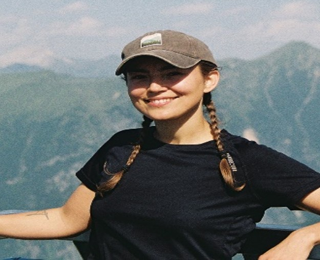

Undergraduate students

Manuela Grane
Master Student
Manuela Grane is a Master student studying the reliability of metabarcoding to assess the composition of lake fish communities from drone-sampled water samples in Abisko region.

Kevin Sisktröm
Bachelor Student
Kevin Sikström is a Bachelor student exploring the evolution of genes involved in mercury cycling since the Archean.

Jonas Bergmansson
Bachelor Student
Jonas Bergmansson is a Bachelor student developing drones with engineering, robotics and electronics for better eDNA sampling strategies.